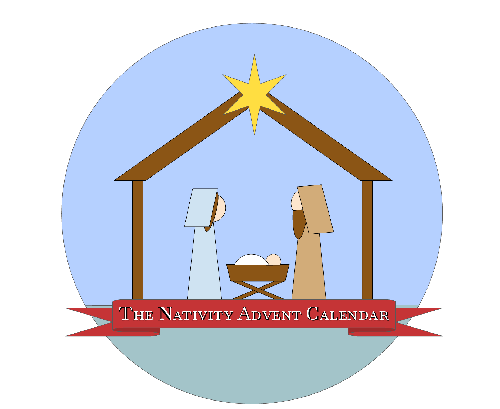

|  |
Nativity Advent Calendar By KyliaUse this calendar with family and friends to spice up your holiday season and enjoy the beauty that the spirit of Christmas has to offer. Engage in uplifting messages that will bring you good cheer. Share with others as we make our world a place of peace and joy. |
|||||
|---|---|---|---|---|---|---|
1AngelLuke 1:26-27It Came Upon a Midnight Clear |
2MaryLuke 1:30-35Mary Did You Know |
3JosephMatthew 1:18-19When Joseph Went to Bethlehem |
4DoveMatthew 1:20-21He Is Born, the Divine Christ Child |
5DonkeyLuke 2:1-5O Little Town of Bethlehem |
6StableLuke 2:6Once within a Lowly Stable |
7InnLuke 2:7Do You Have Room? |
8SheepLuke 2:8Stars Were Gleaming/Infant Lowly, Infant Holy |
9ShepherdsLuke 2:9While Shepherds Watched Their Flocks |
10AngelLuke 2:10-11Hark the Herald Angels Sing |
11MangerLuke 2:12Away in a Manger |
12AngelLuke 2:13-14Far, Far Away on Judea’s Plains |
13SheepLuke 2:15There Was Starlight on the Hillside |
14JesusMatthew 1:23What Child is This? |
15OxLuke 2:16Picture a Christmas |
16Little Drummer boyLuke 2:17-18Little Drummer Boy |
17ShepherdLuke 2:20Go Tell It on the Mountain |
18Wise ManMatthew 2:1We Three Kings |
19StarMatthew 2:2-3Star Bright |
20Wise ManMatthew 2:4-6Oh, Come, All Ye Faithful |
21Wise ManMatthew 2:7With Wondering Awe |
22CamelMatthew 2:8-10One Bright Star |
23Wise Men giftsMatthew 2:11Little Jesus |
24CamelMatthew 2:12-14Mary’s Lullaby |
25HeartLuke 2:1-19Still Still Still |
Enjoy this printout nativity set! | ||